כותר, ארכיון גרסאות
כל הגרסאות של הלוגו, לעיון בלבד. הקבצים לשימוש נמצאים בתיקייה logo-web. לרוב הקבצים יש גם גרסה בלבן, עם הסיומת white-, בתיקייה svg.
נבחרו, 2026-11-02

kothar-fonttag-flank-v6-fine-kr.svg
kothar-final-row-under.svg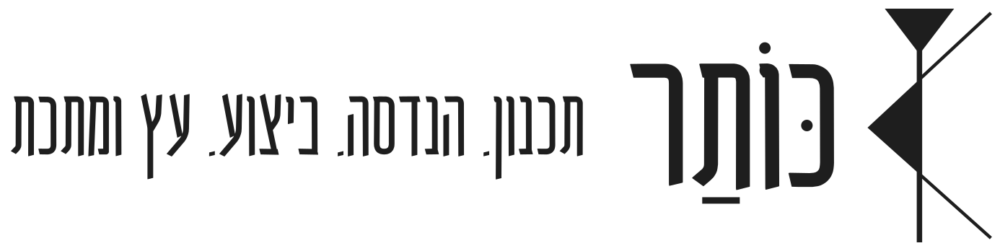
kothar-final-header-side.svg
kothar-final-header-compact.svg
kothar-final-row-bare.svgסבב "ללא העיגול"
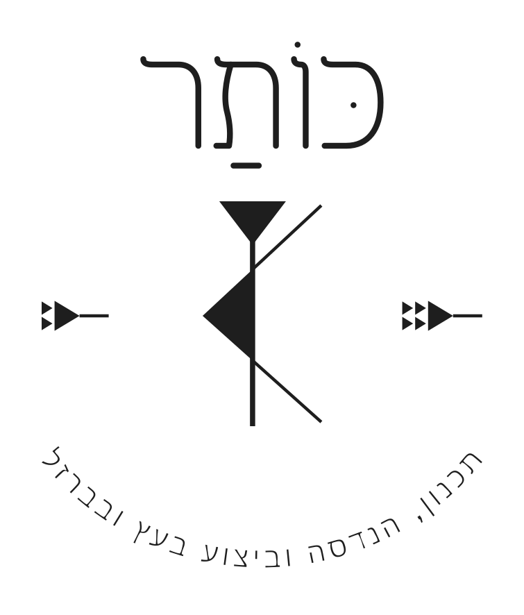
kothar-noring-arc-v6-fine-kr.svg
kothar-noring-line-v6-fine-kr.svg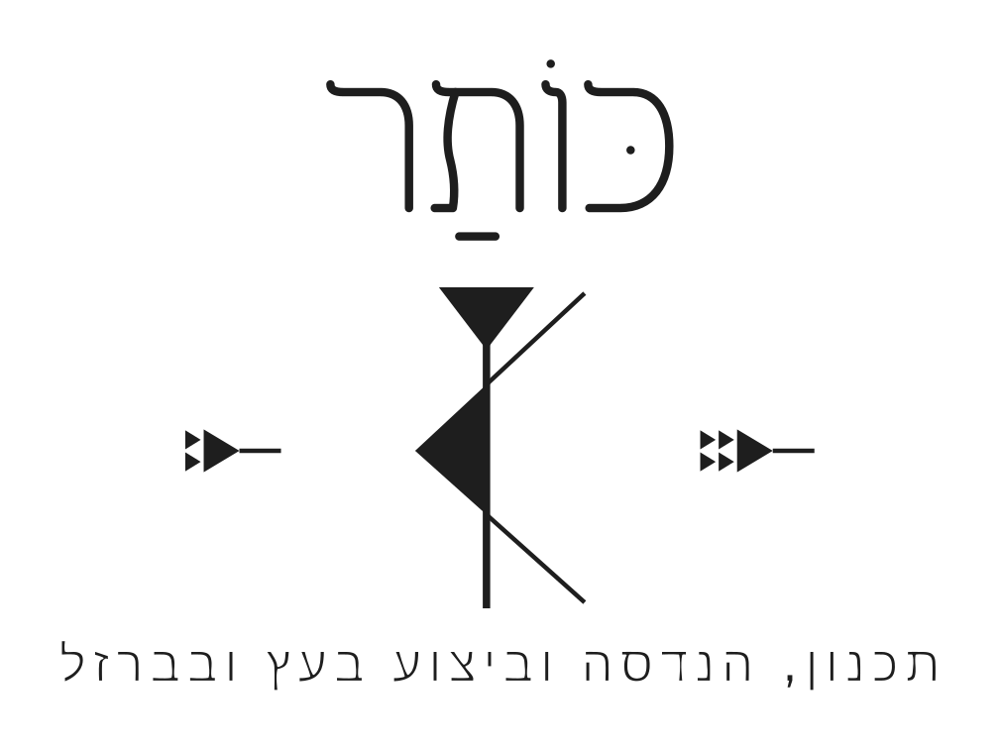
kothar-noring-line-large-v6-fine-kr.svg
kothar-noring-two-lines-v6-fine-kr.svg
kothar-noring-metal-v6-fine-kr.svgסבב הפונט החדש
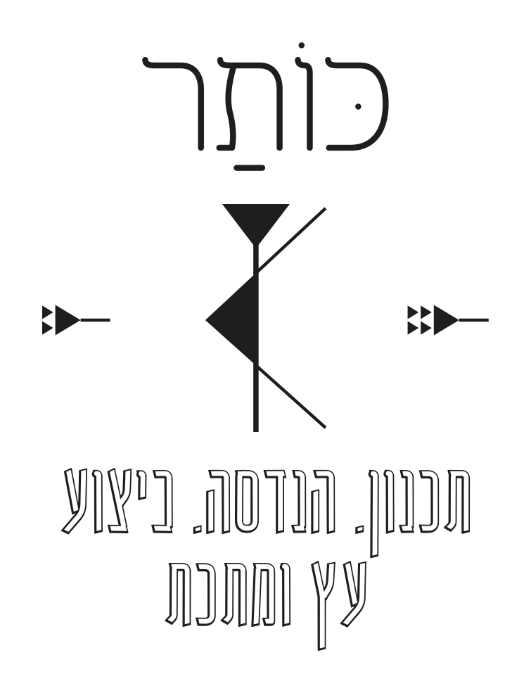
kothar-fonttag-keep-v6-fine-kr.svg
kothar-fonttag-solid-v6-fine-kr.svg
kothar-fonttag-solid-thin-v6-fine-kr.svg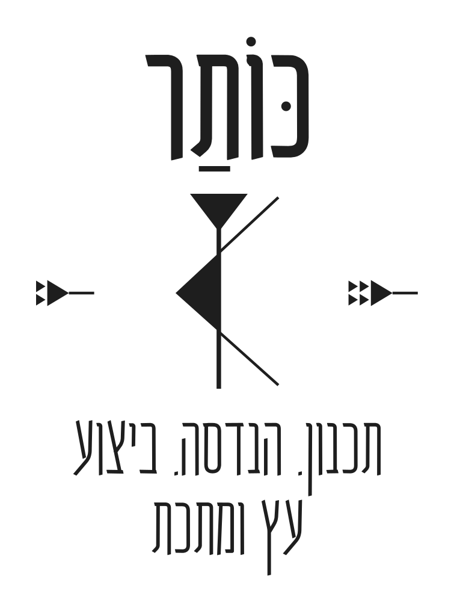
kothar-fonttag-wide-v6-fine-kr.svg
kothar-final-lockup.svg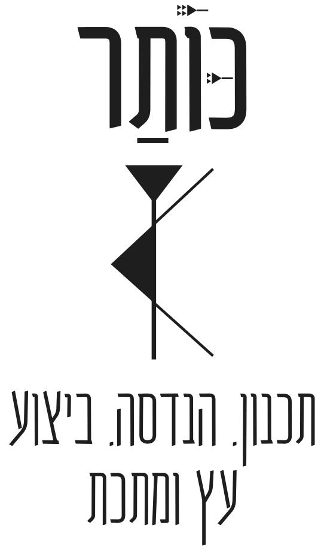
kothar-trial-cunei-niqqud.svg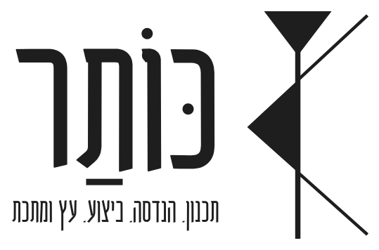
kothar-final-row-beside.svgגרסאות שיוצאו ולא נבחרו
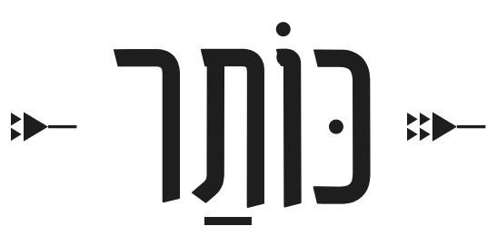
kothar-final-header.svg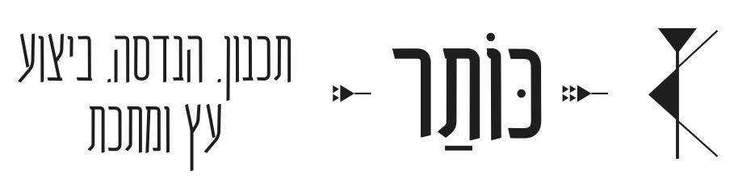
kothar-final-invoice.svg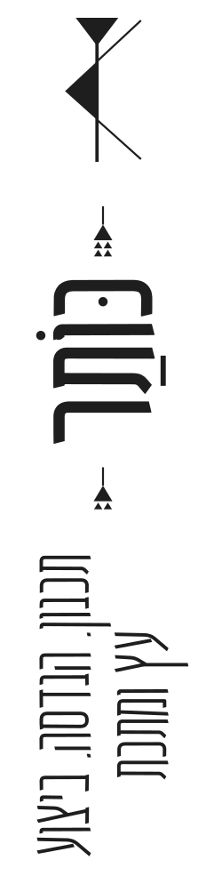
kothar-final-vertical.svgעם העיגול, הסבבים הקודמים
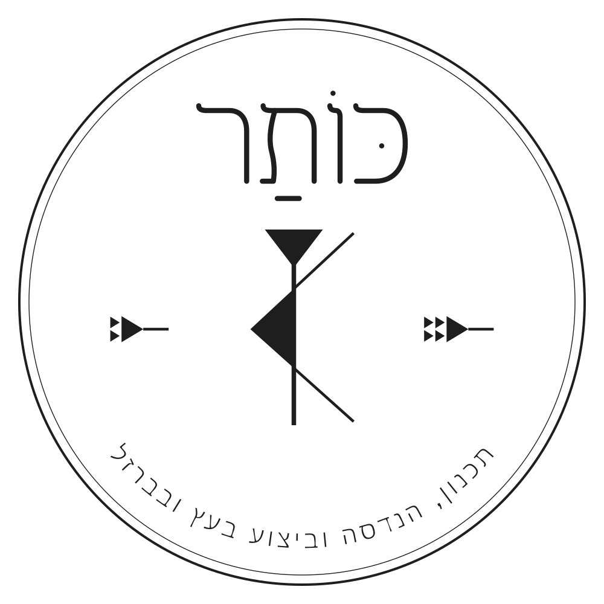
kothar-seal-v6-fine-kr.svg
kothar-seal-v6-fine.svg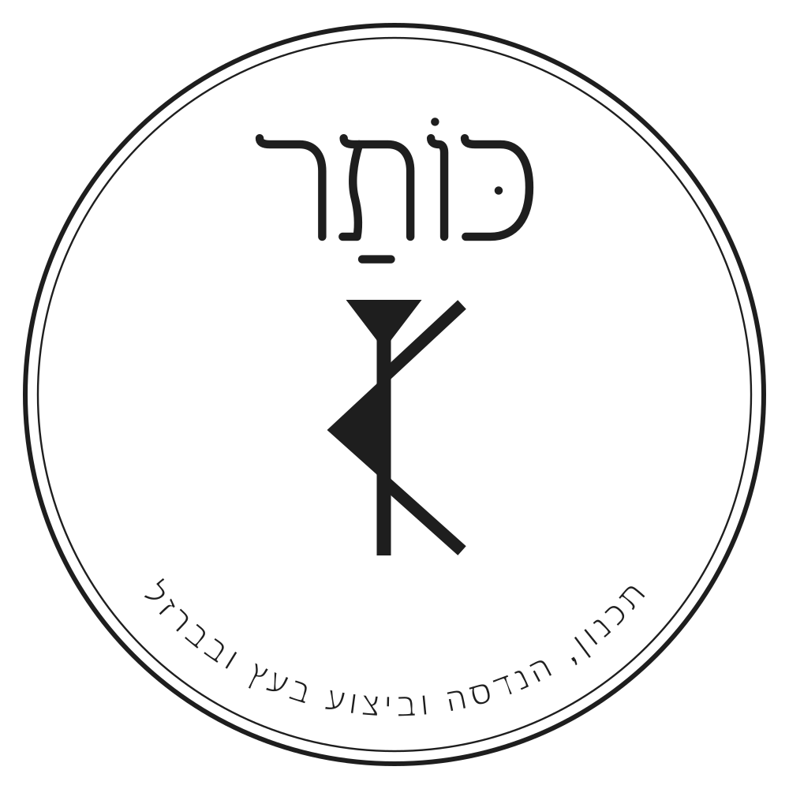
kothar-seal-v6.svg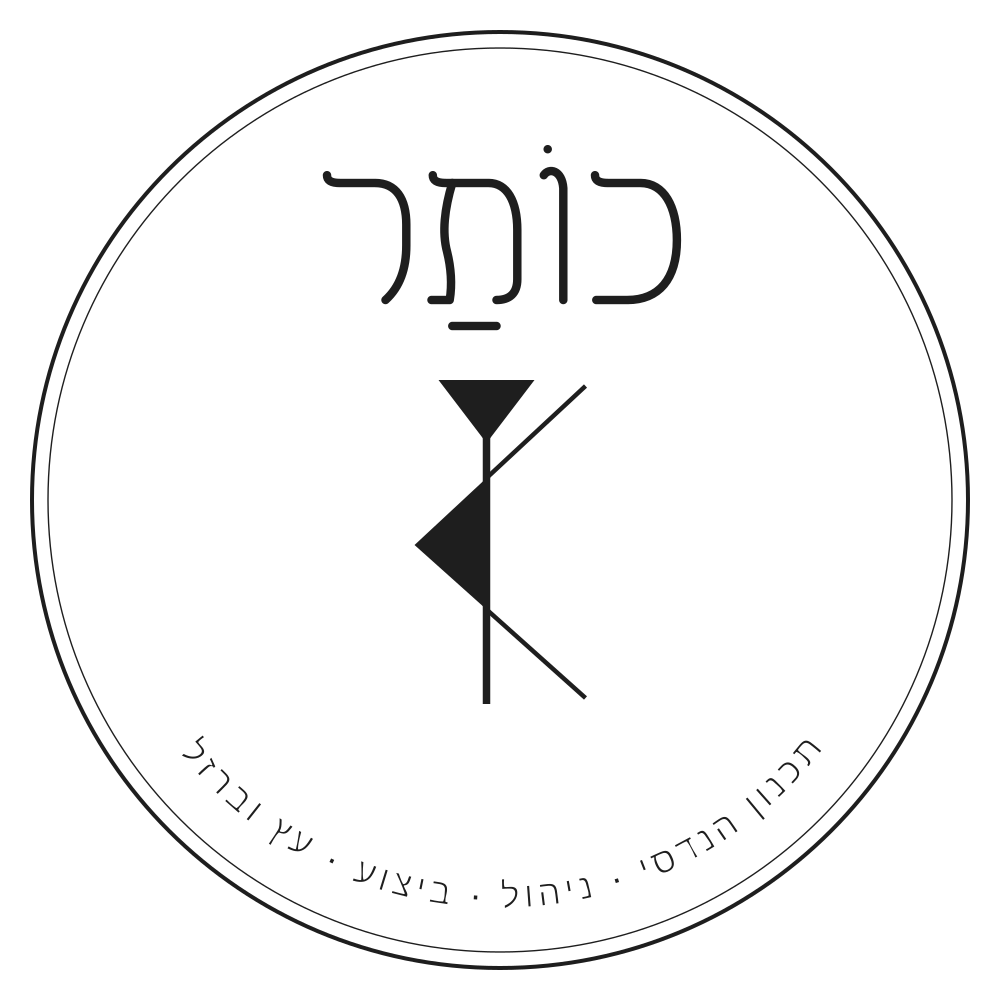
kothar_seal_v5.svgסמל ואופקי, הסבבים הקודמים
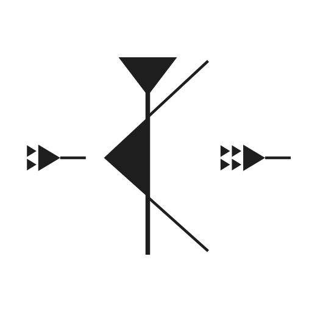
kothar-symbol-v6-fine-kr.svg
kothar-symbol-v6.svg
kothar-horizontal-v6-fine-kr.svg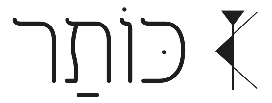
kothar-horizontal-v6-fine.svg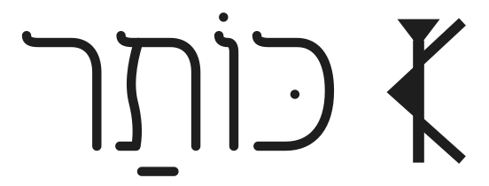
kothar-horizontal-v6.svg